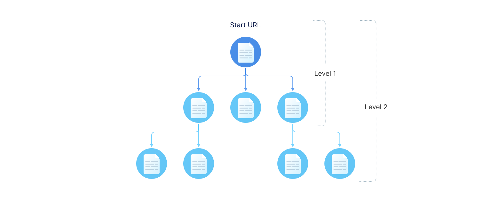

Q&A service¶
The Q&A service allows you to add a conversational layer on top of your existing content. With it, you can instantly create an intelligent Q&A AI assistant. The Q&A assistant leverages the combination of question answering and semantic search technologies to automatically provide the most appropriate answer using your knowledge base and maintain multi-turn contextual conversations.
The Q&A service can be helpful if you already have a pool of information you want to use to:
Handle frequent users’ requests and provide 24/7 automated support
Onboard new customers and employees
Provide guidelines, train personnel and so on
The Q&A assistant is built without any code experience. You only need to provide the content for your AI assistant. The Q&A service supports the following data formats for input:
Web pages
Plain text
PDF
You can use different types of resources, for example, product manuals, guidelines, FAQ pages, articles, policies and so on.
When run, the Q&A service ingests the data input and crawls the specified resources to obtain the content and build an app-specific AI model for the AI assistant, which is then used in dialogs with users. Once the data is indexed, users can immediately interact with the AI assistant to get answers to their questions.
Defining the Q&A content¶
To define the content for the Q&A assistant, use the corpus() function. In the function, define the following parameters:
url: list of links to retrieve information fromdepth: crawl depthmaxPages: maximum number of pages to index
Note
The
maxPagesparameter is obligatory. If you do not set themaxPagesparameter, only one page defined in theurlparameter will be indexed.The maximum number of indexed pages depends on your pricing plan. For details, see Requirements and limitations.
corpus(
{url: "https://alan.app/", depth: 1, maxPages: 50},
{url: "https://alan.app/docs", depth: 2, maxPages: 100},
{url: "https://alan.app/blog/", depth: 1, maxPages: 50}
);
You can also add the content for the Q&A assistant directly to the corpus() function as plain text strings:
corpus(`
Alan AI is a complete Actionable AI Platform to build, deploy and manage AI Assistants in a few days.
With Alan AI, a conversational experience for your app can be built by a single developer, rather than a team of Machine Learning and DevOps experts
`);
If you want the AI assistant to provide a specific response to a certain question, define question-answer pairs in the corpus() function:
corpus(`
Are you a human? No, I am an intelligent AI assistant.
What is your name? My name is Alan.
`);
The Q&A service supports the mixed data mode, with the content provided in different formats. In this case, the service will create a separate index for the data sources added to different corpus() functions and will use all created indices to conduct the dialog with the user.
corpus(
{url: "https://alan.app/", depth: 1, maxPages: 50},
{url: "https://alan.app/docs", depth: 2, maxPages: 100},
{url: "https://alan.app/blog/", depth: 1, maxPages: 50}
);
corpus(`
Are you a human? No, I am an intelligent AI assistant.
What is your name? My name is Alan.
Alan AI is a complete Actionable AI Platform to build, deploy and manage AI Assistants in a few days.
With Alan AI, a conversational experience for your app can be built by a single developer, rather than a team of Machine Learning and DevOps experts
`);
Note
The indexing process may take some time. To check the progress and results, use the Alan AI Studio logs.
Setting the crawl depth¶
The crawl depth defines how ‘far’ down the website hierarchy the Alan AI crawler must go to retrieve the content for your Q&A assistant.
For example, if you set the crawl depth to 1, the crawler will access the page available by the start URL, get all unique links to other pages in the same domain from this page and retrieve information from the start page and the linked ones.
Set the crawl depth wisely. The deeper the level is, the higher the chance is that users will get more accurate answers to their questions. However, a great crawl depth may affect the Q&A service performance.
Example of use¶
Let’s assume you want to build an AI assistant to answer diet and nutrition questions based on the information available in articles at https://www.myfooddata.com/articles/. You can add the following functions to your script:
corpus(`
Hi, I am your AI-powered assistant.
I can provide you with any information you need.
Ask me a question, and I will do my best to help you.
`);
corpus({
url: `https://www.myfooddata.com/articles/`,
depth: 2,
maxPages: 50
});
After you save the script and the indexing process is complete, the user will be able to maintain a contextual dialog with the AI assistant to get answers to all the questions covered in the indexed articles, like:
Why is vitamin D important?What is its current daily value?Should I take calcium with it?What foods are high in it?
Requirements and limitations¶
Mind the following requirements and limitations for the Q&A service:
Make sure the websites and pages you define in the
corpus()function are not protected from crawling. The Q&A service cannot retrieve the content from such resources.Do not add URLs and text strings to the same
corpus()function. Otherwise, the information provided in text strings will be ignored.The maximum number of indexed pages is limited to 1000 for free Alan AI plans and 5000 for paid plans.
Corpus Explorer¶
Note
The Corpus Explorer is available in SLU 4.2 and later.
Alan AI Studio comes with the Corpus Explorer, a tool that enables you to examine data sources used for AI assistant interactions. The Corpus Explorer displays all indexed pages, PDF documents and text data, allowing you to explore and understand the content that serves as the foundation for the AI’s knowledge and responses.
To open the Corpus Explorer, click the magnifying glass icon to the left of the corpus() function in the dialog script.
To explore the indexed data, in the left pane, expand the data source tree and select the necessary page.
You can also search to find the data:
To search by page name, enter your query in the search field at the top of the left pane.
To search by a specific query, enter your query at the top of the main section.
To switch between data representation, from the Content format list at the top right corner, select text or markdown.